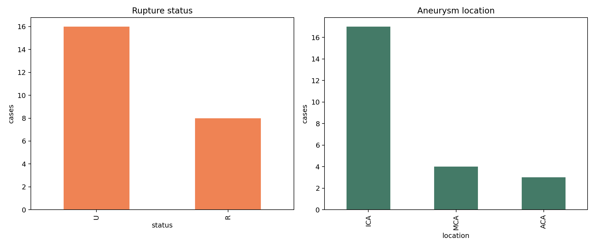
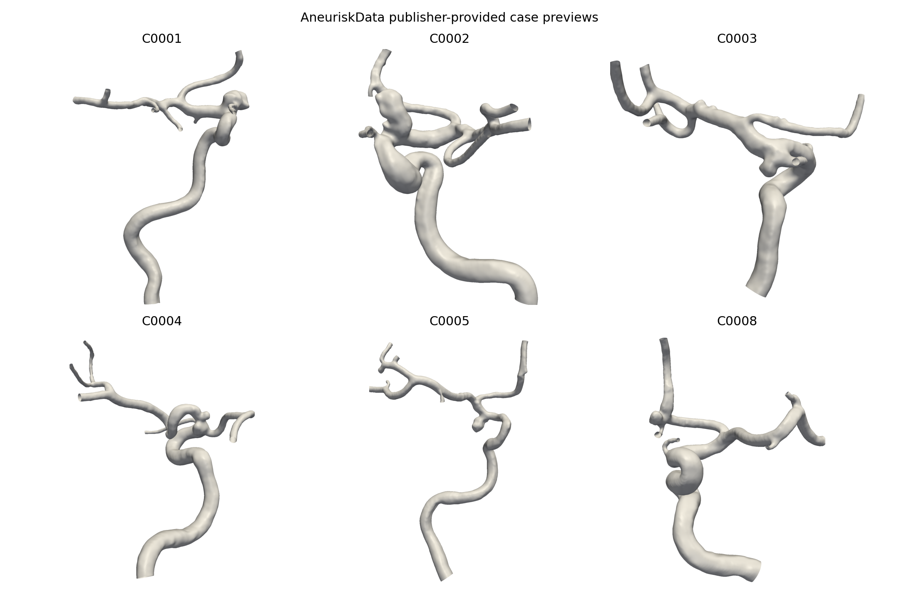

AUDITED ASSETS
One source, several representations.
실제 repository에서 dicom/, volumes/, labels/, models/를 확인했다. case model directory에는 publisher preview, manifest, centerline CSV/VTP, surface STL/VTP가 함께 있다. raw CFD field dataset으로 취급하지 않는다.
CASE CONTRACT
idsource case IDinstitution / modalitysource contextage / sexprovided demographicsaneurysmTypemorphology categoryaneurysmLocationprovided location categoryruptureStatusobserved status, not prospective riskmultipleAneurysmsmultiple-lesion indicatorcenterlines.csvX,Y,Z, maximum inscribed sphere radius
git clone --depth 1 https://github.com/permfl/AneuriskData.git raw/aneurisk/v1/AneuriskData
python scripts/render_aneurisk_samples.py raw/aneurisk/v1/AneuriskData derivatives/aneurisk/v1
# writes case_manifest.csv, clinical_eda.png, six_case_preview_gallery.pngMULTI-CASE EDA


생성 코드: render_aneurisk_samples.py. 다음 단계는 VTI→NIfTI derivative와 VTP mesh QA를 만들되, DICOM/volume/label의 case coverage가 동일한지 먼저 manifest로 확인하는 것이다.